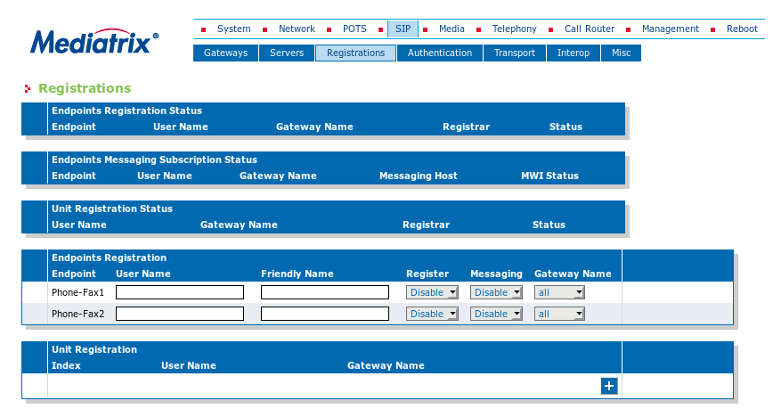
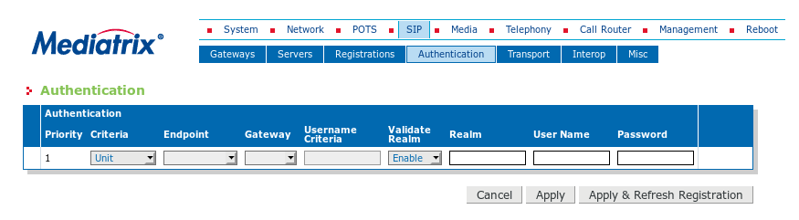

Configuración de Mediatrix¶
Acceso por defecto¶
En su configuración inicial, tiene configurada la interfaz WAN por DHCP y la interfaz LAN 192.168.0.10/24
Nota
Se puede descubrir la dirección IP asignada desde uno de los teléfonos conectados, marcar #*0, o utilizar **Wireshark*
Peligro
No conectar nunca los dos cables del ATA a la vez (LAN y WAN)
Los valores por defecto para acceder:
User Name: admin
Password: administrator
Configuración global¶
Antes de iniciar el proceso de configuración de un adaptador, debemos saber que el equipo en su estado inicial (de fábrica), no tiene dirección IP en la interfaz WAN, de manera, que debemos conectarnos a la interfaz LAN, donde tenemos configurada la dirección IP 192.168.0.10
Configuración de VLAN¶
Network -> VLAN, creamos la VLAN y despues asociamos la iknterfaz creada. Si la VLAN es 21, asociada a la interfaz WAN, la interfaz VLAN, será wan.21
Configuración de red¶
Network -> Interfaces, configurar dirección IP, mascara y router por defecto
Nota
Al cambiar la dirección IP, avisa de que la unidad puede dejar de responder, hay que utilizar una dirección IP de la nueva red.
Configuración de NTP¶
Podemos configurar un servidor NTP o, en su defecto, ajustar manualmente la fecha y hora
Network -> Host
Nota
Se recuerda que dentro del servicio Ibercom, pueden usarse los servidores NTP definidos en Macrolan/VPN-IP 192.168.134.86 y 192.168.134.87)
Configuración del país¶
Se debe configurar el país para que tome los valores adecuados de la parte de telefonía.
Telephony -> Misc
Nota
En caso de que sea necesario adaptar la configuración a algún terminal de cliente, se podrían modificar los parámetros de POTS
Se recuerda que deben reiniciarse los servicioas necesarios en System -> Services para que tenga efecto
Configuración de terminales¶
SIP -> Servers. Se configura un registro en la PABX por cada terminal analógico.
Introducimos la IP de la PABX en los campos Registrar, Proxy y Outbound Proxy, no se aplica mecanismo de Keepalive

Definimos las extensiones en SIP -> Registrations -> User Name
Nota
Debemos definir cada terminal en la OXE como SIP Device
Para la autenticacioń es recomendable utilizar autenticación como SIP DIGEST.
Oxe SIP
SIP proxy con autenticacioń por SIP-DIGEST
Autenticacion realm: nombre_OXE
Aqui, insertamos un dominio de autenticación (el nombre de la OXE) y añadimos password por extensión
Advertencia
La OXE con mgr en castellano, SIP-DIGEST en SIP->Proxy, es traducido como asimilación
Conviene hacer un reinicio del motor SIP (killall sipmotor), teniendo en cuenta, que se interrumpe el servicio unos segundos y que los terminales registrados, deben registrase de nuevo
En Mediatrix configuramos desde SIP -> Authentication cada endpoint con el dominio y contraseña que hayamos definido en la OXE.
Nota
Si todo va bien, en la pantalla SIP -> Registrations, deben aparecer los terminales registrados
Configuración de codecs¶
En Media -> Codecs, seleccionamos los codecs que vayamos a utilizar

El tamaño de la trama del codec G.711 viene por defecto con 30 ms, lo que implica un payload bastante grande. Lo habitual en G.711, son muestreos de 20 ms, así, que se recomienda modificarlo a este valor desde la pestaña advanced
Y en Media -> Misc, ajustamos los DTMF a RTP Event. En nuestro caso, ponemos el payload a 99
Respecto al plan de numeración, en la configuración por defecto de Mediatrix, no trae abiertos los códigos * y #, si desea abrirlos, se añaden en la pestaña Telephony -> DTMF Maps
Nota
Aunque habramos el código, con el tipo de extensiones SIP Device, no tendremos acceso a los servicios que ofrece la OXE.
Configuración SNMP¶
Para habilitar la dirección correcta de envío de traps SNMP, se hace desde Management -> SNMP